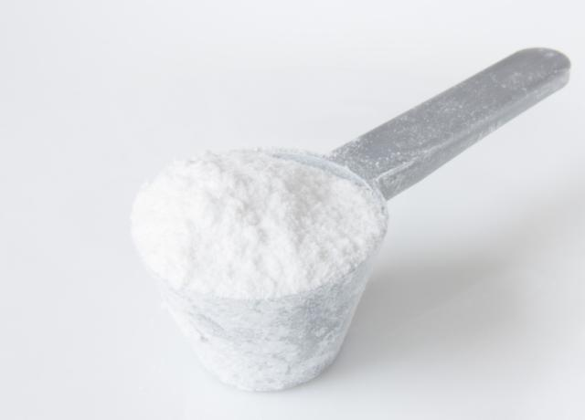

Kreatin
Kreatin je populární suplement mezi sportovci a kulturisty. Pomáhá zvyšovat sílu a výkon při krátkodobých intenzivních cvičeních. Nachází se i přirozeně v mase a rybách. Pravidelné užívání může podpořit růst svalové hmoty. Je důležité dodržovat doporučené dávkování.
Kreatin je obecně považován za bezpečný pro zdravé lidi. Pitný režim je důležitý, protože kreatin může zadržovat vodu ve svalech. Účinky se liší podle typu tréninku a organismu. Při dlouhodobém užívání je vhodné sledovat reakce těla. Správně používaný kreatin může zlepšit sílu a regeneraci po tréninku.
